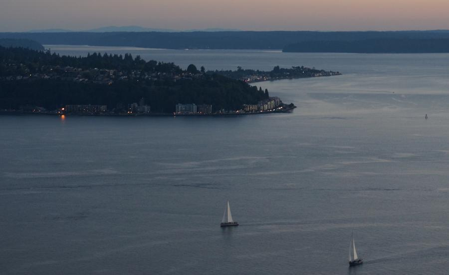

High Dynamic Range
Project Overview
Often times, photographers wish to capture and portray scenes in the real world which have high dynamic range. Modern cameras, however, are unable to capture this range: these devices struggle to map this range to one of 256 intensity values in each color channel. This means that in some scenes, even the best photographs will be partially over- or under-exposed.
One solution for photographers is to take multiple exposures of the same scene by varying the shutter speed. These exposures will vary in the parts which are optimally exposed, and can be combined together to form a single result which better reflects the high-dynamic-range scene. This project is about recovering the radiance map from multiple exposures and using tone mapping to create the final, displayable result.
Back to TopAlgorithm
The algorithm can be broken down into two major parts:
Recovering the radiance map. The focus here is on taking the exposure values from each of the individual images, translating these curves, and recovering a single, smooth curve which represents the radiance map of the image. This radiance map, however, is still not displayable by current devices.
Tone mapping. The focus here is on taking the radiance map and mapping it to intensity values between 0 and 256 in order to create an image that can be displayed.
Recovering the Radiance Map
The value of the \(i\)th pixel in the \(j\)th exposure is a function of (unknown) irradiances and (known) exposure times. In equation form: $$Z_{ij} = f(E_{i} \Delta t_{j})$$ In practice, it is easier to define a camera response function \(g = \ln f^{-1}\) and to solve for the following equation instead, which will be useful in recovering the radiance map: $$g(Z_{ij}) = \ln(f^{-1}(Z_{ij})) = \ln(E_{i}) + \ln(\Delta t_{j})$$
Image Sampling
We begin by reading in all of the images in the directory and recording the log of the associated exposure times. One initial tradeoff we must make is the number of pixels to use in our sample: we want to ensure we have enough pixels to broadly cover the entire range of pixel values, but also want to minimize the sample size to improve performance. Let \(N\) represent the number of pixels we will sample, \(P\) be the number of exposures (images) we have to work with, and \(Z_{min}\) and \(Z_{max}\) represent the minimum and maximum pixel values in our image. Then, we use the constraint specified by Debevec 1997 to determine the number of sample points we need: $$N(P-1) \gt Z_{max} - Z_{min} \Rightarrow N = 2 \lceil \frac{(Z_{max} - Z_{min})}{P-1} \rceil$$ The same pixels in the sample are selected from each exposure, and are used to help solve for the camera response.
Computing Weights
We expect the camera response to fit the data more poorly at the extremes, so it is important to emphasize the fitting on the center part of the curve. As such, we use a simple weighting scheme which peaks at the midpoint pixel value. $$ w(z) = \begin{cases} z - Z_{min} & z \leq \frac{1}{2}(Z_{max} - Z_{min}) \\ Z_{max} - z & z \gt \frac{1}{2}(Z_{max} - Z_{min}) \end{cases} $$
Compute the Camera Response
Using these components, we can solve for the camera response. Because this is an overdetermined system, we wish to minimize the following objective function, which consists of a fitting term (left component) and a smoothing term (right component): $$ O = \sum_{i=1}^{N} \sum_{j=1}^{P} {w(Z_{ij}) [g(Z_{ij} - \ln E_{i} - \ln \Delta t_{j})]}^{2} + \lambda \sum_{z=Z_{min}+1}^{Z_{max}-1}[w(z) g''(z)]^{2}$$ This can be done using the gsolve.m provided in the Debevec 1997 paper.
Compute the HDR Radiance Map
Once we have this information, we can finally compute the radiance map. The equation we follow for the log of the radiance is as follows: $$\ln E_{i} = \frac{\sum_{j=1}^{P} w(Z_{ij})[g(Z_{ij} - \ln \Delta t_{j})]}{\sum_{j=1}^{P} w_(Z_{ij})}$$
Tone Mapping
Results
References
Akshay Narayan and Japheth Wong ★ CS194-26 ★ Final Project ★ Top
Fake Miniatures
Project Overview
This project involved creating the Tilt Shift effect automatically. This cool effect makes it seem like the subject of a photo is a miniature model, since other parts of the photo are blurred out. The following picture of an actual miniature (taken by me at Legoland) shows this effect.

As you can see, while the subject is in focus, parts of the image at other depths are not. This project seeks to fake this effect on non-miniature photographs. This is done by selecting a focus line and a depth of field around the focus line that will remain sharp, then progressively blurring the image using a gaussian filter as you move away from the focus line. This approach has limitations, however; if the object you wish to focus on is very tall, then while it would be in focus in an actual tilt shift photograph since all of the object is at the same depth, this approach can lead to parts of the object at the same depth ending up at different levels of sharpness. Therefore, as seen below in some of the pictures in the results section, this approach works best with images that are laid out such that horizontal strips of the image correspond to levels of depth.
Results
| Original Image | Fake Miniature Image |
 |
|
 |
|
|  | |
 |
 |
 |
 |
 |
All pictures above were taken by me except the following.
- Castle: wayman72 on flickr
- Village: Bernard Fourmond on flickr
- Airport: David Brown on flickr
- Coastal Town: From project spec
Akshay Narayan and Japheth Wong ★ CS194-26 ★ Final Project ★ Top
Vertigo Shots
Project Overview
The "Vertigo Shot" or "Dolly Zoom" effect, an example of which can be seen here, is an interesting effect in which a subject of a photo stays the same size while the background morphs around it throughout a series of photographs or a movie clip.
This effect is created by moving the camera away from the subject while also increasing the zoom level such that the subject appears the same size. The zooming results in a warping effect on the background of the photograph. Since the background is warping while the subject stays the same, the resulting photo sequence can look pretty cool, as seen below.


Bells and Whistles
It is easier to see this effect as an animation. To this end, we have compiled the Vertigo Effect pictures into animated gifs. As can be seen, it is quite hard to perfectly align the subject of the photo so that it is completely constant throughout the frames of the animation.